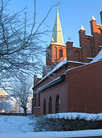
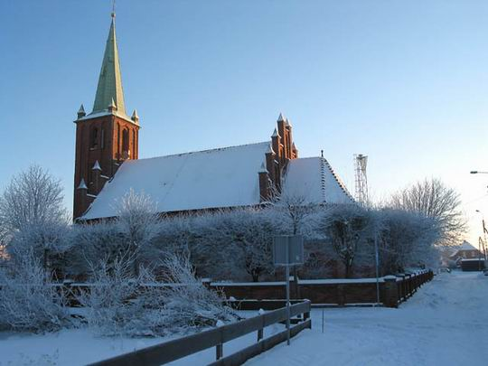

KO¦CIÓ£ W KU¬NICY

Po raz pierwszy nabo¿eñstwo sezonowe w szkole ku¼nickiej odby³o siê w roku 1923 lub 1924. Liturgiê sprawowali ksiê¿a letnicy, Jastarnia za¶ dostarczy³a potrzebne przybory ko¶cielne. Udzia³ wiernych by³ tak wielki, ¿e w roku 1925zwrócono siê do Kurii Biskupiej o zezwolenie, aby nabo¿eñstwo mog³o byæ odprawiane w domu prywatnym. Z tego zezwolenia nie zrobiono jednak ¿adnego u¿ytku. Tak¿e w roku 1924 lub 1925 odby³o siê pierwsze zebranie konstrukcyjne celem wybudowania w³asnej kaplicy w Ku¼nicy. Obrady spe³z³y jednak na niczym, bo trudno¶ci by³y wielkie - brak by³o placu, funduszy i chêtnych do pracy.

Na jesieni 1930 roku przyby³ so³tys Edmund Budzisz i o¶wiadczy³, ¿e w Ku¼nicy koniecznie musi stan±æ kaplica. Opatrzno¶æ Bo¿a teraz wprost w cudowny sposób ca³± spraw± pokierowa³a. Do Ku¼nicy przyjecha³ urzêdnik Banku Gospodarczo - Krajowego z celem za³o¿enia tzw. "Zielonej Gromady", czyli od³amu ''strzelca''.
Rybacy nie wiedzieli wprawdzie, co to jest, ale powiedzieli sobie, ¿e wszystko ma zwi±zek z bankiem, mo¿e siê przydaæ. M³odzie¿ te¿ gremialnie da³a siê zapisaæ do tego zwi±zku, ogólnie spodziewano siê z tego materialnych korzy¶ci. Wys³annik banku, widz±c tak wielki zapa³, nie szczêdzi³ obietnic i zapyta³, czym móg³by siê rybakom z Ku¼nicy przys³u¿yæ. Odpowiedziano mu, ¿e bardzo przyda³oby siê pog³êbienie wjazdu do przystani, a przede wszystkim pomoc przy budowie domu ludowego, w którym na razie mogliby¶my odprawiaæ nabo¿eñstwa. Bankowiec pierwsze przyrzek³, a co do domu ludowego to poradzi³ zabraæ siê do budowy ko¶cio³a i przyrzek³, ¿e postara siê o plany budowlane.

Pierwszym mieszkañcem Ku¼nicy pochowanym na cmentarzu by³ Seweryn Budzisz (1897 -1935).
Ksawery Szynalewski (1909-1039) z W±brze¼na ; w dniu 1.VII.1933 roku zosta³ mianowany wikarym (kuratusem) w Ku¼nicy; po powstaniu samodzielnej parafii zosta³ tak¿e jej pierwszym proboszczem; 22.X1939 roku zosta³ aresztowany przez Niemców i zamordowany w Pia¶nicy;
ZESTAWIENIE SAKRAMENTÓW CHRZTU
| Lp. | Rok | Liczba ochrzczonych |
| 1 | 1933 | 15 |
| 2 | 1934 | 18 |
| 3 | 1935 | 19 |
| 4 | 1936 | 17 |
| 5 | 1937 | 19 |
| 6 | 1938 | 27 |
| 7 | 1939 | 16 |
| 8 | 1940 | - |
| 9 | 1941 | - |
| 10 | 1942 | - |
| 11 | 1943 | - |
| 12 | 1944 | - |
| 13 | 1945 | - |
| 14 | 1946 | 7 |
| 15 | 1947 | 13 |
| 16 | 1948 | 16 |
| 17 | 1949 | 16 |
| 18 | 1950 | 24 |
| 19 | 1951 | 18 |
| 20 | 1952 | 25 |
| 21 | 1953 | 20 |
| 22 | 1954 | 30 |
| 23 | 1955 | 13 |
| 24 | 1956 | 18 |
| 26 | 1957 | 27 |
| 26 | 1958 | 20 |
| 27 | 1959 | 21 |
| 28 | 1960 | 16 |
| 29 | 1961 | 17 |
| 30 | 1962 | 23 |
| 31 | 1963 | 14 |
| 32 | 1964 | 17 |
| 33 | 1965 | 17 |
| 34 | 1966 | 22 |
| 35 | 1967 | 17 |
| 36 | 1968 | 12 |
| 37 | 1969 | 17 |
| 38 | 1970 | 12 |
| 39 | 1971 | 16 |
| 40 | 1972 | 24 |
| 41 | 1973 | 18 |
| 42 | 1974 | 18 |
| 43 | 1975 | 20 |
| 44 | 1976 | 19 |
| 45 | 1977 | 24 |
| 46 | 1978 | 14 |
| 47 | 1979 | 21 |
| 48 | 1980 | 21 |
| 49 | 1981 | 21 |
| 50 | 1982 | 27 |
| 51 | 1983 | 18 |
| 52 | 1984 | 20 |
| 53 | 1985 | 19 |
| 54 | 1986 | 22 |
| 55 | 1987 | 17 |
| 56 | 1988 | 18 |
| 57 | 1989 | 15 |
| 58 | 1990 | 18 |
| 59 | 1991 | 21 |
| 60 | 1992 | 12 |
| 61 | 1993 | 20 |
| 62 | 1994 | 11 |
| 63 | 1995 | 18 |
| 64 | 1996 | 12 |
| 65 | 1997 | 6 |
| 66 | 1998 | 6 |
| 67 | 1999 | 10 |
| 68 | 2000 | 10 |
| 69 | 2001 | 6 |
| 70 | 2002 | |
| 71 | 2003 | |
| 72 | 2004 | |
| 73 | 2005 | |
| 74 | 2006 | |
MA£O¯EÑSTWA SAKRAMENTALNE W PARAFII KU¯NICA
| Lp. | Rok | Liczba ¶lubów |
| 1 | 1946 | 2 |
| 2 | 1947 | 8 |
| 3 | 1948 | 5 |
| 4 | 1949 | 4 |
| 5 | 1950 | 11 |
| 6 | 1951 | 4 |
| 7 | 1952 | 11 |
| 8 | 1953 | 15 |
| 9 | 1954 | 5 |
| 10 | 1955 | 9 |
| 11 | 1956 | 4 |
| 12 | 1957 | 1 |
| 13 | 1958 | 5 |
| 14 | 1959 | 2 |
| 15 | 1960 | 2 |
| 16 | 1961 | 2 |
| 17 | 1962 | 3 |
| 18 | 1963 | - |
| 19 | 1964 | - |
| 20 | 1965 | - |
| 21 | 1966 | 3 |
| 22 | 1967 | 3 |
| 23 | 1968 | 6 |
| 24 | 1969 | 6 |
| 25 | 1970 | 5 |
| 26 | 1971 | 4 |
| 27 | 1972 | 6 |
| 28 | 1973 | 10 |
| 29 | 1974 | 7 |
| 30 | 1975 | 10 |
| 31 | 1976 | 5 |
| 32 | 1977 | 5 |
| 33 | 1978 | 8 |
| 34 | 1979 | 11 |
| 35 | 1980 | 7 |
| 36 | 1981 | 9 |
| 37 | 1982 | 7 |
| 38 | 1983 | 8 |
| 39 | 1984 | 10 |
| 40 | 1985 | 10 |
| 41 | 1986 | 3 |
| 42 | 1987 | 6 |
| 43 | 1988 | 5 |
| 44 | 1989 | 6 |
| 45 | 1990 | 6 |
| 46 | 1991 | 7 |
| 47 | 1992 | 5 |
| 48 | 1993 | 4 |
| 49 | 1994 | 5 |
| 50 | 1995 | 3 |
| 51 | 1996 | 1 |
| 52 | 1997 | 8 |
| 53 | 1998 | 6 |
| 54 | 1999 | 3 |
| 55 | 2000 | 2 |
| 56 | 2001 | 1 |
| 57 | 2002 | |
| 58 | 2003 | |
| 59 | 2004 | |
| 60 | 2005 | |
| 61 | 2006 | |
POGRZEBY W PARAFII KU¯NICA
| Lp. | Rok | Liczba pogrzebów |
| 1 | 1946 | 7 |
| 2 | 1947 | 7 |
| 3 | 1948 | 8 |
| 4 | 1949 | 10 |
| 5 | 1950 | 6 |
| 6 | 1951 | 11 |
| 7 | 1952 | 11 |
| 8 | 1953 | 14 |
| 9 | 1954 | 6 |
| 10 | 1955 | 6 |
| 11 | 1956 | 12 |
| 12 | 1957 | 9 |
| 13 | 1958 | 10 |
| 14 | 1959 | 7 |
| 15 | 1960 | 9 |
| 16 | 1961 | 8 |
| 17 | 1962 | 3 |
| 18 | 1963 | 8 |
| 19 | 1964 | 7 |
| 20 | 1965 | 9 |
| 21 | 1966 | 10 |
| 22 | 1967 | 4 |
| 23 | 1968 | 6 |
| 24 | 1969 | 13 |
| 25 | 1970 | 13 |
| 26 | 1971 | 8 |
| 27 | 1972 | 10 |
| 28 | 1973 | 12 |
| 29 | 1974 | 9 |
| 30 | 1975 | 5 |
| 31 | 1976 | 9 |
| 32 | 1977 | 10 |
| 33 | 1978 | 13 |
| 34 | 1979 | 9 |
| 35 | 1980 | 12 |
| 36 | 1981 | 17 |
| 37 | 1982 | 12 |
| 38 | 1983 | 14 |
| 39 | 1984 | 22 |
| 40 | 1985 | 12 |
| 41 | 1986 | 12 |
| 42 | 1987 | 17 |
| 43 | 1988 | 14 |
| 44 | 1989 | 17 |
| 45 | 1990 | 11 |
| 46 | 1991 | 12 |
| 47 | 1992 | 13 |
| 48 | 1993 | 8 |
| 49 | 1994 | 14 |
| 50 | 1995 | 13 |
| 51 | 1996 | 11 |
| 52 | 1997 | 18 |
| 53 | 1998 | 14 |
| 54 | 1999 | 8 |
| 55 | 2000 | 12 |
| 56 | 2001 | 9 |
| 57 | 2002 | |
| 58 | 2003 | |
| 59 | 2004 | |
| 60 | 2005 | |
| 61 | 2006 | |
BIERZMOWANIE W PARAFII KU¬NICA
| Lp. | Data | Liczba bierzmowanych | Szafarz sakramêtu |
| 1 | 15.09.1947 | 120 | ks. bp. Kazimierz J. Kowalski |
| 2 | 03.09.1951 | 89 | ks. bp. Kazimierz J. Kowalski |
| 3 | 14.09.1956 | 18 | ks. bp. Bernard Czapliñski |
| 4 | 11.09.1961 | 106 | ks. bp. Kazimierz J. Kowalski |
| 5 | 30.10.1966 | 110 | ks. bp. Kazimierz Józef Kowalski |
| 6 | 16.09.1971 | 67 | ks. bp. Bernard Czapliñski |
| 7 | 1981 | 53-bierzmowanie odby³o siê w Jastarnii | ks.bp. Zygfryd Kowalski |
| 8 | 13.10.1984 | 35 | ks.bp. Edmund Piszcz |
| 9 | 22.03.1987 | 52 | ks.bp. Marian Przykucki |
| 10 | 08.12.1991 | 44-bierzmowanie odby³o siê w Jastarnii | ks.bp. Andzrzej ¦liwiñski |
| 11 | 20.05.1993 | 37 | ks.bp. Tadeusz Goc³owski |
| 12 | 15.03.1995 | 31 | ks.bp. Zygmund Paw³owicz |
| 13 | 20.03.1997 | 29 | ks.bp. Zygmund Paw³owicz |
| 14 | 01.03.1999 | 29 | ks.bp. Zygmund Paw³owicz |
KSIʯA PARAFII KU¬NICA
| Imiê i Nazwisko | Okres pobytu |
| ks. Losiñski | 01.01.1933-01.07.1933 |
| ks. Ksawery Szynalewski | 13.08.1933-17.10.1939 |
| o. Andzrzej Napiera³a | .. do koñca 1945 roku |
| o. Stefan Hawlicki | 13.01.1946-14.07.1946 |
| o. Bonawenttura Cichoñ | 15.08.1946-04.10.1948 |
| o. Ireneusz Kmiecik | 31.10.1948-31.07.1950 |
| o. £ukasz Grzywacz | 01.08.1950-13.03.1952 |
| o. Pawe³ Kapistran Holte | 13.03.1952-06.05.1955 |
| o. Benedykt Niemiec | 09.05.1955-18.10.1955 |
| ks. Brunon Rieband | 18.10.1955-14.09.1978 |
| ks. Jerzy Tomczak | 23.07.1972-24.09.1978 |
| ks. Gerard Markowski | 24.09.1978- - |